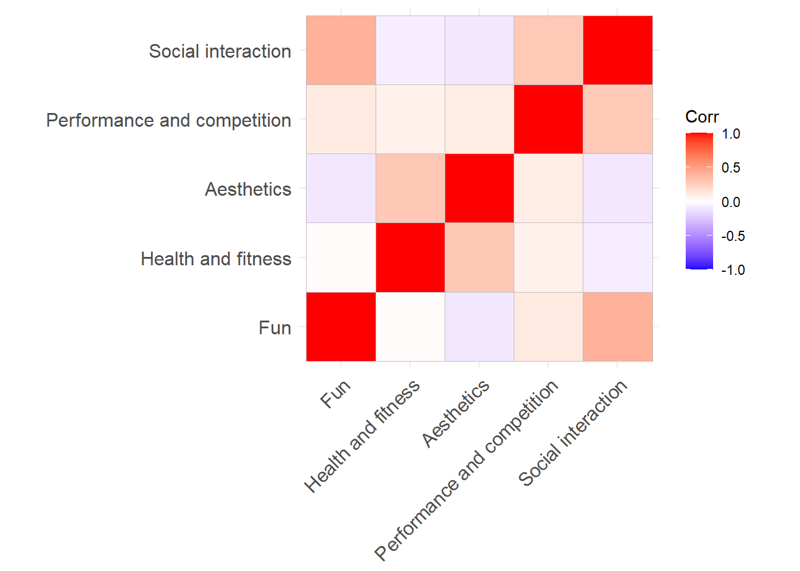

Descriptives
Last compiled on juli, 2023
To copy the code, click the button in the upper right corner of the code-chunks.
1 Getting started
1.1 clean up
rm(list=ls())
gc()1.2 general custom functions
fpackage.check: Check if packages are installed (and install if not) in Rfsave: Function to save data with time stamp in correct directoryfload: Function to load R-objects under new names
fpackage.check <- function(packages) {
lapply(packages, FUN = function(x) {
if (!require(x, character.only = TRUE)) {
install.packages(x, dependencies = TRUE)
library(x, character.only = TRUE)
}
})
}
fsave <- function(x, file, location = "./data/processed/", ...) {
if (!dir.exists(location))
dir.create(location)
datename <- substr(gsub("[:-]", "", Sys.time()), 1, 8)
totalname <- paste(location, datename, file, sep = "")
print(paste("SAVED: ", totalname, sep = ""))
save(x, file = totalname)
}
fload <- function(fileName){
load(fileName)
get(ls()[ls() != "fileName"])
}1.3 necessary packages
tidyverse: data wranglingreshape2: reshaping datamlogit: construct dataframe for multinomial logit modelhaven: read and write various data formatssjlabelled: work with labelled (SPSS) datamclust: latent (motivational) profile analysisHmisc: containingrcorr()funciton to create correlation matrixggcorrplot: visualize corelation matrixggplot2
packages = c("tidyverse", "mlogit", "haven", "sjlabelled", "mclust", "Hmisc", "ggcorrplot", "reshape2", "ggplot2")
fpackage.check(packages)2 I&O Panel
2.1 load in data
Load in data of the I&O panel. Unlabel the data.
haven::read_sav("./rawdata/DRADTRIAL22_totaal.sav") %>%
sjlabelled::unlabel(.,verbose=F) -> df2.2 motivations
nrow(df[which(df$GESLACHT2==2),])#> [1] 2092#subset motivation data
mot <- df %>%
select(V10_1, V10_2, V10_3, V10_4, V10_5)
#and add identifier
mot$id <- 1:nrow(mot)
#also add gender
mot$gender <- df$GESLACHT2descriptives
des <- mot %>%
select(-c(id,gender)) %>%
gather("Variable", "value") %>%
group_by(Variable) %>%
summarise(Mean=mean(value,na.rm=T),
SD=sd(value,na.rm=T),
min=min(value,na.rm=T),
max=max(value,na.rm=T))
des_males <- mot[which(mot$gender==1),] %>%
select(-c(id,gender)) %>%
gather("Variable", "value") %>%
group_by(Variable) %>%
summarise(Mean=mean(value,na.rm=T),
SD=sd(value,na.rm=T),
min=min(value,na.rm=T),
max=max(value,na.rm=T))
des_females <- mot[which(mot$gender==2),] %>%
select(-c(id,gender)) %>%
gather("Variable", "value") %>%
group_by(Variable) %>%
summarise(Mean=mean(value,na.rm=T),
SD=sd(value,na.rm=T),
min=min(value,na.rm=T),
max=max(value,na.rm=T))
des$Variable <- c("Fun", "Health and fitness", "Aesthetics", "Performance and competition", "Social interaction")
des_males$Variable <- c("Fun", "Health and fitness", "Aesthetics", "Performance and competition", "Social interaction")
des_females$Variable <- c("Fun", "Health and fitness", "Aesthetics", "Performance and competition", "Social interaction")
options(knitr.kable.NA='')
knitr::kable(des, digits=2, "html", caption="Reasons for taking part in sports") %>%
kableExtra::kable_styling(bootstrap_options = c("striped", "hover"))| Variable | Mean | SD | min | max |
|---|---|---|---|---|
| Fun | 4.29 | 0.71 | 1 | 5 |
| Health and fitness | 4.33 | 0.59 | 1 | 5 |
| Aesthetics | 3.46 | 0.99 | 1 | 5 |
| Performance and competition | 2.81 | 1.07 | 1 | 5 |
| Social interaction | 3.25 | 1.11 | 1 | 5 |
knitr::kable(des_males, digits=2, "html", caption="Males") %>%
kableExtra::kable_styling(bootstrap_options = c("striped", "hover"))| Variable | Mean | SD | min | max |
|---|---|---|---|---|
| Fun | 4.29 | 0.72 | 1 | 5 |
| Health and fitness | 4.31 | 0.58 | 1 | 5 |
| Aesthetics | 3.29 | 1.03 | 1 | 5 |
| Performance and competition | 3.04 | 1.05 | 1 | 5 |
| Social interaction | 3.25 | 1.13 | 1 | 5 |
knitr::kable(des_females, digits=2, "html", caption="Females") %>%
kableExtra::kable_styling(bootstrap_options = c("striped", "hover"))| Variable | Mean | SD | min | max |
|---|---|---|---|---|
| Fun | 4.29 | 0.70 | 1 | 5 |
| Health and fitness | 4.35 | 0.59 | 1 | 5 |
| Aesthetics | 3.55 | 0.95 | 1 | 5 |
| Performance and competition | 2.68 | 1.06 | 1 | 5 |
| Social interaction | 3.25 | 1.11 | 1 | 5 |
correlation matrix
tab <- mot[complete.cases(mot),-c(6,7)]
names(tab) <- c("Fun", "Health and fitness", "Aesthetics", "Performance and competition", "Social interaction")
#Hmisc::rcorr(as.matrix(tab))
#visualize
ggcorrplot::ggcorrplot(cor(tab))
#rm(tab)2.3 motivaitonal clusters?
Mclust requires complete data. We standardize input
variables, for reasons of interpretability.
mot %>%
na.omit() %>% #listwise deletion
mutate(across(!c(id,gender), scale)) -> mot.nm #standardize indicators, expect id.Explore model fit by plotting BIC, ICL (optional: bootstrapped LRTS) with number of profiles (1-9)
BIC <- mclustBIC(mot.nm %>% select(-c(id,gender)))
ICL <- mclustICL(mot.nm %>% select(-c(id,gender)))
#LRT <- mclustBootstrapLRT(mot.nm %>%select(-id), modelName = "EEV")
plot(BIC)
plot(ICL)
summary(BIC)
summary(ICL)m2 <- Mclust(mot.nm %>% select(-c(id,gender)), modelNames="EEV", G=2, x=BIC)
m3 <- Mclust(mot.nm %>% select(-c(id,gender)), modelNames="EEV", G=3, x=BIC)
m4 <- Mclust(mot.nm %>% select(-c(id,gender)), modelNames="EEV", G=4, x=BIC)
m5 <- Mclust(mot.nm %>% select(-c(id,gender)), modelNames="EEV", G=5, x=BIC)
m6 <- Mclust(mot.nm %>% select(-c(id,gender)), modelNames="EEV", G=6, x=BIC)
m7 <- Mclust(mot.nm %>% select(-c(id,gender)), modelNames="EEV", G=7, x=BIC)
m8 <- Mclust(mot.nm %>% select(-c(id,gender)), modelNames="EEV", G=8, x=BIC)plot results, to make solution more intuitive (if solution is theoretically meaningful, we should be able to interpret the different profiles).
i use reshape2 to extract subscale means [note: datw
were transformed into standardized z-scores; thus profile means reflect
SD-units above/below sample mean (which is 0)].
data.frame(m4$parameters$mean,stringsAsFactors = F) %>%
rownames_to_column() %>%
rename(Motivation = rowname) %>%
melt(id.vars = "Motivation", variable.name = "Profile", value.name = "Mean") %>%
mutate(Mean = round(Mean, 2),
Mean = ifelse(Mean>1,1, Mean)#trim values exceeding +1SD
) -> means
#give appropriate labels
means$Motivation <- ifelse(means$Motivation=="V10_1", "Fun", ifelse(means$Motivation=="V10_2", "Health & Fitness", ifelse(means$Motivation=="V10_3", "Aesthetics", ifelse(means$Motivation=="V10_4", "Performance & Competition", ifelse(means$Motivation=="V10_5", "Social interaction", NA)))))
#plot
means %>% ggplot(aes(Motivation, Mean, group = Profile, color = Profile)) +
geom_line() + geom_point() +
labs(x=NULL, y="Standardized score") +
theme_bw(base_size=14) +
geom_hline(yintercept=0, linetype="dashed") +
theme(axis.text.x=element_text(angle=15, hjust=.8),legend.position = "top")
Mclust solution for EEV, 5
LS0tDQp0aXRsZTogIkRlc2NyaXB0aXZlcyINCmJpYmxpb2dyYXBoeTogcmVmZXJlbmNlcy5iaWINCmRhdGU6ICJMYXN0IGNvbXBpbGVkIG9uIGByIGZvcm1hdChTeXMudGltZSgpLCAnJUIsICVZJylgIg0Kb3V0cHV0OiANCiAgaHRtbF9kb2N1bWVudDoNCiAgICBjc3M6IHR3ZWFrcy5jc3MNCiAgICB0b2M6ICB0cnVlDQogICAgdG9jX2Zsb2F0OiB0cnVlDQogICAgbnVtYmVyX3NlY3Rpb25zOiB0cnVlDQogICAgdG9jX2RlcHRoOiAxDQogICAgY29kZV9mb2xkaW5nOiBzaG93DQogICAgY29kZV9kb3dubG9hZDogeWVzDQotLS0NCg0KYGBge3IsIGdsb2JhbHNldHRpbmdzLCBlY2hvPUZBTFNFLCB3YXJuaW5nPUZBTFNFLCByZXN1bHRzPSdoaWRlJywgbWVzc2FnZT1GQUxTRX0NCmxpYnJhcnkoa25pdHIpDQpsaWJyYXJ5KHRpZHl2ZXJzZSkNCmtuaXRyOjpvcHRzX2NodW5rJHNldChlY2hvID0gVFJVRSkNCm9wdHNfY2h1bmskc2V0KHRpZHkub3B0cz1saXN0KHdpZHRoLmN1dG9mZj0xMDApLHRpZHk9VFJVRSwgd2FybmluZyA9IEZBTFNFLCBtZXNzYWdlID0gRkFMU0UsY29tbWVudCA9ICIjPiIsIGNhY2hlPVRSVUUsIGNsYXNzLnNvdXJjZT1jKCJ0ZXN0IiksIGNsYXNzLm91dHB1dD1jKCJ0ZXN0MyIpKQ0Kb3B0aW9ucyh3aWR0aCA9IDEwMCkNCnJnbDo6c2V0dXBLbml0cigpDQoNCmNvbG9yaXplIDwtIGZ1bmN0aW9uKHgsIGNvbG9yKSB7c3ByaW50ZigiPHNwYW4gc3R5bGU9J2NvbG9yOiAlczsnPiVzPC9zcGFuPiIsIGNvbG9yLCB4KSB9DQpgYGANCg0KDQpgYGB7ciBrbGlwcHksIGVjaG89RkFMU0UsIGluY2x1ZGU9VFJVRX0NCmtsaXBweTo6a2xpcHB5KHBvc2l0aW9uID0gYygndG9wJywgJ3JpZ2h0JykpDQoja2xpcHB5OjprbGlwcHkoY29sb3IgPSAnZGFya3JlZCcpDQoja2xpcHB5OjprbGlwcHkodG9vbHRpcF9tZXNzYWdlID0gJ0NsaWNrIHRvIGNvcHknLCB0b29sdGlwX3N1Y2Nlc3MgPSAnRG9uZScpDQpgYGANCg0KDQotLS0gIA0KDQoNClRvIGNvcHkgdGhlIGNvZGUsIGNsaWNrIHRoZSBidXR0b24gaW4gdGhlIHVwcGVyIHJpZ2h0IGNvcm5lciBvZiB0aGUgY29kZS1jaHVua3MuDQoNCiMgR2V0dGluZyBzdGFydGVkDQoNCiMjIGNsZWFuIHVwDQoNCmBgYHtyLCByZXN1bHRzPSdoaWRlJ30NCnJtKGxpc3Q9bHMoKSkNCmdjKCkNCmBgYA0KDQo8YnI+DQoNCiMjIGdlbmVyYWwgY3VzdG9tIGZ1bmN0aW9ucw0KDQotIGBmcGFja2FnZS5jaGVja2A6IENoZWNrIGlmIHBhY2thZ2VzIGFyZSBpbnN0YWxsZWQgKGFuZCBpbnN0YWxsIGlmIG5vdCkgaW4gUg0KLSBgZnNhdmVgOiBGdW5jdGlvbiB0byBzYXZlIGRhdGEgd2l0aCB0aW1lIHN0YW1wIGluIGNvcnJlY3QgZGlyZWN0b3J5DQotIGBmbG9hZGA6IEZ1bmN0aW9uIHRvIGxvYWQgUi1vYmplY3RzIHVuZGVyIG5ldyBuYW1lcw0KDQpgYGB7ciwgZXZhbD1GQUxTRX0NCmZwYWNrYWdlLmNoZWNrIDwtIGZ1bmN0aW9uKHBhY2thZ2VzKSB7DQogICAgbGFwcGx5KHBhY2thZ2VzLCBGVU4gPSBmdW5jdGlvbih4KSB7DQogICAgICAgIGlmICghcmVxdWlyZSh4LCBjaGFyYWN0ZXIub25seSA9IFRSVUUpKSB7DQogICAgICAgICAgICBpbnN0YWxsLnBhY2thZ2VzKHgsIGRlcGVuZGVuY2llcyA9IFRSVUUpDQogICAgICAgICAgICBsaWJyYXJ5KHgsIGNoYXJhY3Rlci5vbmx5ID0gVFJVRSkNCiAgICAgICAgfQ0KICAgIH0pDQp9DQoNCmZzYXZlIDwtIGZ1bmN0aW9uKHgsIGZpbGUsIGxvY2F0aW9uID0gIi4vZGF0YS9wcm9jZXNzZWQvIiwgLi4uKSB7DQogICAgaWYgKCFkaXIuZXhpc3RzKGxvY2F0aW9uKSkNCiAgICAgICAgZGlyLmNyZWF0ZShsb2NhdGlvbikNCiAgICBkYXRlbmFtZSA8LSBzdWJzdHIoZ3N1YigiWzotXSIsICIiLCBTeXMudGltZSgpKSwgMSwgOCkNCiAgICB0b3RhbG5hbWUgPC0gcGFzdGUobG9jYXRpb24sIGRhdGVuYW1lLCBmaWxlLCBzZXAgPSAiIikNCiAgICBwcmludChwYXN0ZSgiU0FWRUQ6ICIsIHRvdGFsbmFtZSwgc2VwID0gIiIpKQ0KICAgIHNhdmUoeCwgZmlsZSA9IHRvdGFsbmFtZSkNCn0NCg0KDQpmbG9hZCAgPC0gZnVuY3Rpb24oZmlsZU5hbWUpew0KICBsb2FkKGZpbGVOYW1lKQ0KICBnZXQobHMoKVtscygpICE9ICJmaWxlTmFtZSJdKQ0KfQ0KYGBgDQoNCjxicj4NCg0KIyMgbmVjZXNzYXJ5IHBhY2thZ2VzDQoNCi0gYHRpZHl2ZXJzZWA6IGRhdGEgd3JhbmdsaW5nDQotIGByZXNoYXBlMmA6IHJlc2hhcGluZyBkYXRhDQotIGBtbG9naXRgOiBjb25zdHJ1Y3QgZGF0YWZyYW1lIGZvciBtdWx0aW5vbWlhbCBsb2dpdCBtb2RlbA0KLSBgaGF2ZW5gOiByZWFkIGFuZCB3cml0ZSB2YXJpb3VzIGRhdGEgZm9ybWF0cw0KLSBgc2psYWJlbGxlZGA6IHdvcmsgd2l0aCBsYWJlbGxlZCAoU1BTUykgZGF0YQ0KLSBgbWNsdXN0YDogbGF0ZW50IChtb3RpdmF0aW9uYWwpIHByb2ZpbGUgYW5hbHlzaXMNCi0gYEhtaXNjYDogY29udGFpbmluZyBgcmNvcnIoKWAgZnVuY2l0b24gdG8gY3JlYXRlIGNvcnJlbGF0aW9uIG1hdHJpeA0KLSBgZ2djb3JycGxvdGA6IHZpc3VhbGl6ZSBjb3JlbGF0aW9uIG1hdHJpeA0KLSBgZ2dwbG90MmANCg0KYGBge3IsIGV2YWw9RkFMU0V9DQpwYWNrYWdlcyA9IGMoInRpZHl2ZXJzZSIsICJtbG9naXQiLCAiaGF2ZW4iLCAic2psYWJlbGxlZCIsICJtY2x1c3QiLCAiSG1pc2MiLCAiZ2djb3JycGxvdCIsICJyZXNoYXBlMiIsICJnZ3Bsb3QyIikNCmZwYWNrYWdlLmNoZWNrKHBhY2thZ2VzKQ0KYGBgDQoNCg0KIyBJJk8gUGFuZWwNCg0KIyMgbG9hZCBpbiBkYXRhDQoNCkxvYWQgaW4gZGF0YSBvZiB0aGUgSSZPIHBhbmVsLiBVbmxhYmVsIHRoZSBkYXRhLg0KDQpgYGB7cn0NCmhhdmVuOjpyZWFkX3NhdigiLi9yYXdkYXRhL0RSQURUUklBTDIyX3RvdGFhbC5zYXYiKSAlPiUNCiAgc2psYWJlbGxlZDo6dW5sYWJlbCguLHZlcmJvc2U9RikgLT4gZGYNCmBgYA0KDQo8YnI+IA0KDQoNCiMjIG1vdGl2YXRpb25zDQoNCg0KYGBge3J9DQpucm93KGRmW3doaWNoKGRmJEdFU0xBQ0hUMj09MiksXSkNCg0KI3N1YnNldCBtb3RpdmF0aW9uIGRhdGENCm1vdCA8LSBkZiAlPiUNCiAgc2VsZWN0KFYxMF8xLCBWMTBfMiwgVjEwXzMsIFYxMF80LCBWMTBfNSkNCiNhbmQgYWRkIGlkZW50aWZpZXINCm1vdCRpZCA8LSAxOm5yb3cobW90KQ0KDQojYWxzbyBhZGQgZ2VuZGVyDQptb3QkZ2VuZGVyIDwtIGRmJEdFU0xBQ0hUMg0KYGBgDQoNCg0KPGJyPg0KDQpkZXNjcmlwdGl2ZXMNCg0KYGBge3J9DQpkZXMgPC0gbW90ICU+JQ0KICBzZWxlY3QoLWMoaWQsZ2VuZGVyKSkgJT4lDQogIGdhdGhlcigiVmFyaWFibGUiLCAidmFsdWUiKSAlPiUNCiAgZ3JvdXBfYnkoVmFyaWFibGUpICU+JQ0KICBzdW1tYXJpc2UoTWVhbj1tZWFuKHZhbHVlLG5hLnJtPVQpLA0KICAgICAgICAgICAgU0Q9c2QodmFsdWUsbmEucm09VCksDQogICAgICAgICAgICBtaW49bWluKHZhbHVlLG5hLnJtPVQpLA0KICAgICAgICAgICAgbWF4PW1heCh2YWx1ZSxuYS5ybT1UKSkNCg0KZGVzX21hbGVzIDwtIG1vdFt3aGljaChtb3QkZ2VuZGVyPT0xKSxdICU+JQ0KICBzZWxlY3QoLWMoaWQsZ2VuZGVyKSkgJT4lDQogIGdhdGhlcigiVmFyaWFibGUiLCAidmFsdWUiKSAlPiUNCiAgZ3JvdXBfYnkoVmFyaWFibGUpICU+JQ0KICBzdW1tYXJpc2UoTWVhbj1tZWFuKHZhbHVlLG5hLnJtPVQpLA0KICAgICAgICAgICAgU0Q9c2QodmFsdWUsbmEucm09VCksDQogICAgICAgICAgICBtaW49bWluKHZhbHVlLG5hLnJtPVQpLA0KICAgICAgICAgICAgbWF4PW1heCh2YWx1ZSxuYS5ybT1UKSkNCg0KZGVzX2ZlbWFsZXMgPC0gbW90W3doaWNoKG1vdCRnZW5kZXI9PTIpLF0gJT4lDQogIHNlbGVjdCgtYyhpZCxnZW5kZXIpKSAlPiUNCiAgZ2F0aGVyKCJWYXJpYWJsZSIsICJ2YWx1ZSIpICU+JQ0KICBncm91cF9ieShWYXJpYWJsZSkgJT4lDQogIHN1bW1hcmlzZShNZWFuPW1lYW4odmFsdWUsbmEucm09VCksDQogICAgICAgICAgICBTRD1zZCh2YWx1ZSxuYS5ybT1UKSwNCiAgICAgICAgICAgIG1pbj1taW4odmFsdWUsbmEucm09VCksDQogICAgICAgICAgICBtYXg9bWF4KHZhbHVlLG5hLnJtPVQpKQ0KDQoNCg0KZGVzJFZhcmlhYmxlIDwtIGMoIkZ1biIsICJIZWFsdGggYW5kIGZpdG5lc3MiLCAiQWVzdGhldGljcyIsICJQZXJmb3JtYW5jZSBhbmQgY29tcGV0aXRpb24iLCAiU29jaWFsIGludGVyYWN0aW9uIikNCmRlc19tYWxlcyRWYXJpYWJsZSA8LSBjKCJGdW4iLCAiSGVhbHRoIGFuZCBmaXRuZXNzIiwgIkFlc3RoZXRpY3MiLCAiUGVyZm9ybWFuY2UgYW5kIGNvbXBldGl0aW9uIiwgIlNvY2lhbCBpbnRlcmFjdGlvbiIpDQpkZXNfZmVtYWxlcyRWYXJpYWJsZSA8LSBjKCJGdW4iLCAiSGVhbHRoIGFuZCBmaXRuZXNzIiwgIkFlc3RoZXRpY3MiLCAiUGVyZm9ybWFuY2UgYW5kIGNvbXBldGl0aW9uIiwgIlNvY2lhbCBpbnRlcmFjdGlvbiIpDQoNCm9wdGlvbnMoa25pdHIua2FibGUuTkE9JycpDQprbml0cjo6a2FibGUoZGVzLCBkaWdpdHM9MiwgImh0bWwiLCBjYXB0aW9uPSJSZWFzb25zIGZvciB0YWtpbmcgcGFydCBpbiBzcG9ydHMiKSAlPiUNCiAga2FibGVFeHRyYTo6a2FibGVfc3R5bGluZyhib290c3RyYXBfb3B0aW9ucyA9IGMoInN0cmlwZWQiLCAiaG92ZXIiKSkNCg0Ka25pdHI6OmthYmxlKGRlc19tYWxlcywgZGlnaXRzPTIsICJodG1sIiwgY2FwdGlvbj0iTWFsZXMiKSAlPiUNCiAga2FibGVFeHRyYTo6a2FibGVfc3R5bGluZyhib290c3RyYXBfb3B0aW9ucyA9IGMoInN0cmlwZWQiLCAiaG92ZXIiKSkNCg0Ka25pdHI6OmthYmxlKGRlc19mZW1hbGVzLCBkaWdpdHM9MiwgImh0bWwiLCBjYXB0aW9uPSJGZW1hbGVzIikgJT4lDQogIGthYmxlRXh0cmE6OmthYmxlX3N0eWxpbmcoYm9vdHN0cmFwX29wdGlvbnMgPSBjKCJzdHJpcGVkIiwgImhvdmVyIikpDQogICAgICAgICAgIA0KYGBgDQoNCjxicj4NCg0KY29ycmVsYXRpb24gbWF0cml4DQoNCmBgYHtyfQ0KdGFiIDwtIG1vdFtjb21wbGV0ZS5jYXNlcyhtb3QpLC1jKDYsNyldDQpuYW1lcyh0YWIpIDwtIGMoIkZ1biIsICJIZWFsdGggYW5kIGZpdG5lc3MiLCAiQWVzdGhldGljcyIsICJQZXJmb3JtYW5jZSBhbmQgY29tcGV0aXRpb24iLCAiU29jaWFsIGludGVyYWN0aW9uIikNCiNIbWlzYzo6cmNvcnIoYXMubWF0cml4KHRhYikpDQoNCiN2aXN1YWxpemUNCmdnY29ycnBsb3Q6OmdnY29ycnBsb3QoY29yKHRhYikpDQojcm0odGFiKQ0KYGBgDQoNCg0KIyMgbW90aXZhaXRvbmFsIGNsdXN0ZXJzPw0KDQpgTWNsdXN0YCByZXF1aXJlcyBjb21wbGV0ZSBkYXRhLiBXZSBzdGFuZGFyZGl6ZSBpbnB1dCB2YXJpYWJsZXMsIGZvciByZWFzb25zIG9mIGludGVycHJldGFiaWxpdHkuDQoNCmBgYHtyLCBldmFsPUZ9DQptb3QgJT4lDQogIG5hLm9taXQoKSAlPiUgI2xpc3R3aXNlIGRlbGV0aW9uDQogIG11dGF0ZShhY3Jvc3MoIWMoaWQsZ2VuZGVyKSwgc2NhbGUpKSAtPiBtb3Qubm0gI3N0YW5kYXJkaXplIGluZGljYXRvcnMsIGV4cGVjdCBpZC4NCg0KYGBgDQoNCjxicj4NCg0KRXhwbG9yZSBtb2RlbCBmaXQgYnkgcGxvdHRpbmcgQklDLCBJQ0wgKG9wdGlvbmFsOiBib290c3RyYXBwZWQgTFJUUykgd2l0aCBudW1iZXIgb2YgcHJvZmlsZXMgKDEtOSkNCg0KYGBge3IsIGV2YWw9Rn0NCkJJQyA8LSBtY2x1c3RCSUMobW90Lm5tICU+JSBzZWxlY3QoLWMoaWQsZ2VuZGVyKSkpDQpJQ0wgPC0gbWNsdXN0SUNMKG1vdC5ubSAlPiUgc2VsZWN0KC1jKGlkLGdlbmRlcikpKQ0KI0xSVCA8LSBtY2x1c3RCb290c3RyYXBMUlQobW90Lm5tICU+JXNlbGVjdCgtaWQpLCBtb2RlbE5hbWUgPSAiRUVWIikNCg0KcGxvdChCSUMpDQpwbG90KElDTCkNCnN1bW1hcnkoQklDKQ0Kc3VtbWFyeShJQ0wpDQpgYGANCg0KYGBge3IsIGV2YWw9Rn0NCm0yIDwtIE1jbHVzdChtb3Qubm0gJT4lIHNlbGVjdCgtYyhpZCxnZW5kZXIpKSwgbW9kZWxOYW1lcz0iRUVWIiwgRz0yLCB4PUJJQykNCm0zIDwtIE1jbHVzdChtb3Qubm0gJT4lIHNlbGVjdCgtYyhpZCxnZW5kZXIpKSwgbW9kZWxOYW1lcz0iRUVWIiwgRz0zLCB4PUJJQykNCm00IDwtIE1jbHVzdChtb3Qubm0gJT4lIHNlbGVjdCgtYyhpZCxnZW5kZXIpKSwgbW9kZWxOYW1lcz0iRUVWIiwgRz00LCB4PUJJQykNCm01IDwtIE1jbHVzdChtb3Qubm0gJT4lIHNlbGVjdCgtYyhpZCxnZW5kZXIpKSwgbW9kZWxOYW1lcz0iRUVWIiwgRz01LCB4PUJJQykNCm02IDwtIE1jbHVzdChtb3Qubm0gJT4lIHNlbGVjdCgtYyhpZCxnZW5kZXIpKSwgbW9kZWxOYW1lcz0iRUVWIiwgRz02LCB4PUJJQykNCm03IDwtIE1jbHVzdChtb3Qubm0gJT4lIHNlbGVjdCgtYyhpZCxnZW5kZXIpKSwgbW9kZWxOYW1lcz0iRUVWIiwgRz03LCB4PUJJQykNCm04IDwtIE1jbHVzdChtb3Qubm0gJT4lIHNlbGVjdCgtYyhpZCxnZW5kZXIpKSwgbW9kZWxOYW1lcz0iRUVWIiwgRz04LCB4PUJJQykNCmBgYA0KDQo8YnI+DQoNCnBsb3QgcmVzdWx0cywgdG8gbWFrZSBzb2x1dGlvbiBtb3JlIGludHVpdGl2ZSAoaWYgc29sdXRpb24gaXMgdGhlb3JldGljYWxseSBtZWFuaW5nZnVsLCB3ZSBzaG91bGQgYmUgYWJsZSB0byBpbnRlcnByZXQgdGhlIGRpZmZlcmVudCBwcm9maWxlcykuDQoNCmkgdXNlIGByZXNoYXBlMmAgdG8gZXh0cmFjdCBzdWJzY2FsZSBtZWFucyBbbm90ZTogZGF0dyB3ZXJlIHRyYW5zZm9ybWVkIGludG8gc3RhbmRhcmRpemVkIHotc2NvcmVzOyB0aHVzIHByb2ZpbGUgbWVhbnMgcmVmbGVjdCBTRC11bml0cyBhYm92ZS9iZWxvdyBzYW1wbGUgbWVhbiAod2hpY2ggaXMgMCldLg0KDQpgYGB7ciwgZXZhbD1GfQ0KZGF0YS5mcmFtZShtNCRwYXJhbWV0ZXJzJG1lYW4sc3RyaW5nc0FzRmFjdG9ycyA9IEYpICU+JQ0KICByb3duYW1lc190b19jb2x1bW4oKSAlPiUNCiAgcmVuYW1lKE1vdGl2YXRpb24gPSByb3duYW1lKSAlPiUNCiAgbWVsdChpZC52YXJzID0gIk1vdGl2YXRpb24iLCB2YXJpYWJsZS5uYW1lID0gIlByb2ZpbGUiLCB2YWx1ZS5uYW1lID0gIk1lYW4iKSAlPiUNCiAgbXV0YXRlKE1lYW4gPSByb3VuZChNZWFuLCAyKSwNCiAgICAgICAgIE1lYW4gPSBpZmVsc2UoTWVhbj4xLDEsIE1lYW4pI3RyaW0gdmFsdWVzIGV4Y2VlZGluZyArMVNEDQogICAgICAgICApIC0+IG1lYW5zDQoNCiNnaXZlIGFwcHJvcHJpYXRlIGxhYmVscw0KbWVhbnMkTW90aXZhdGlvbiA8LSBpZmVsc2UobWVhbnMkTW90aXZhdGlvbj09IlYxMF8xIiwgIkZ1biIsIGlmZWxzZShtZWFucyRNb3RpdmF0aW9uPT0iVjEwXzIiLCAiSGVhbHRoICYgRml0bmVzcyIsIGlmZWxzZShtZWFucyRNb3RpdmF0aW9uPT0iVjEwXzMiLCAiQWVzdGhldGljcyIsIGlmZWxzZShtZWFucyRNb3RpdmF0aW9uPT0iVjEwXzQiLCAiUGVyZm9ybWFuY2UgJiBDb21wZXRpdGlvbiIsIGlmZWxzZShtZWFucyRNb3RpdmF0aW9uPT0iVjEwXzUiLCAiU29jaWFsIGludGVyYWN0aW9uIiwgTkEpKSkpKQ0KDQojcGxvdA0KbWVhbnMgJT4lIGdncGxvdChhZXMoTW90aXZhdGlvbiwgTWVhbiwgZ3JvdXAgPSBQcm9maWxlLCBjb2xvciA9IFByb2ZpbGUpKSArDQogIGdlb21fbGluZSgpICsgZ2VvbV9wb2ludCgpICsNCiAgbGFicyh4PU5VTEwsIHk9IlN0YW5kYXJkaXplZCBzY29yZSIpICsNCiAgdGhlbWVfYncoYmFzZV9zaXplPTE0KSArDQogIGdlb21faGxpbmUoeWludGVyY2VwdD0wLCBsaW5ldHlwZT0iZGFzaGVkIikgKw0KICB0aGVtZShheGlzLnRleHQueD1lbGVtZW50X3RleHQoYW5nbGU9MTUsIGhqdXN0PS44KSxsZWdlbmQucG9zaXRpb24gPSAidG9wIikNCmBgYA0KDQoNCiFbTWNsdXN0IHNvbHV0aW9uIGZvciBFRVYsIDVdKC4vaW1hZ2VzL2xwYS5wbmcpDQo=
Copyright © 2023 Rob Franken